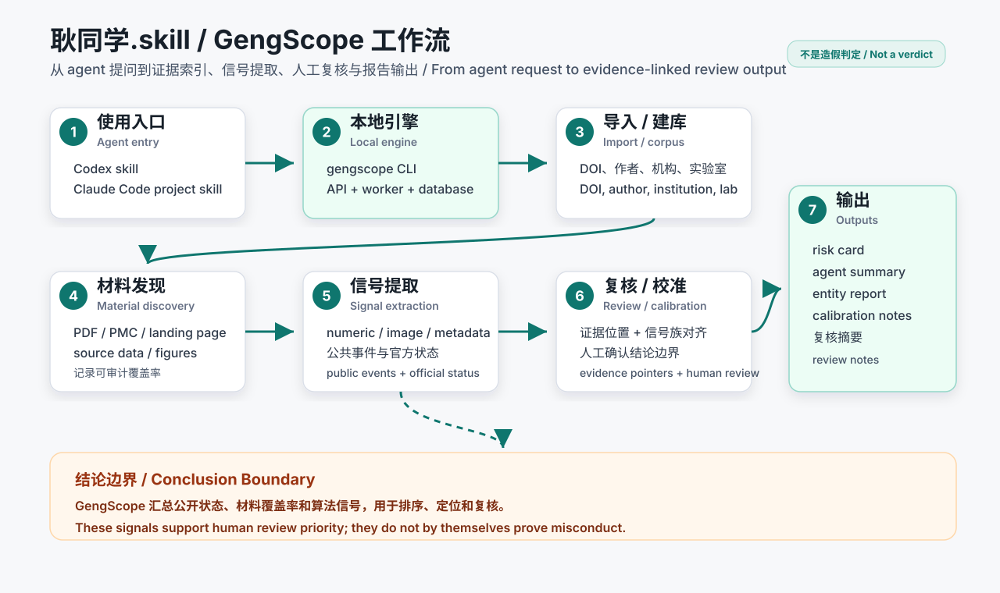
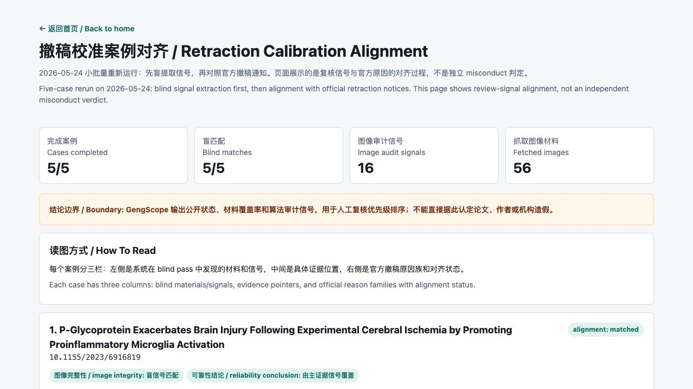

耿同学.skill / GengScope
面向公开论文的科研完整性索引平台。它把论文、作者、机构、公开事件、材料覆盖率、算法审计信号和证据位置放进同一个可追溯系统，用于人工复核优先级排序。
最快使用方式
先启动本地 GengScope engine，再让 Codex 或 Claude Code 调用同一个本地 CLI/API。
git clone https://github.com/leiMizzou/gengscope.git
cd gengscope
cp infra/docker/.env.example infra/docker/.env
docker compose -f infra/docker/docker-compose.yml up -d --build api workerCodex
把 skills/gengscope 安装到 ~/.codex/skills/gengscope，然后直接说“用 耿同学.skill 检查这个 DOI”。
Claude Code
仓库已经包含 .claude/skills/gengscope/SKILL.md。在仓库根目录打开 Claude Code 后使用 /gengscope。
本地 API
默认地址是 http://127.0.0.1:8010/。远程 agent 不能直接访问你电脑上的 127.0.0.1。
工作流一图看懂
agent 只是入口。真正的导入、材料发现、信号提取、复核边界和报告生成由本地 GengScope engine 完成。

已经可以自动化的部分
建库
DOI 导入、作者/机构搜索、entity corpus 构建、本地名单导入。
材料
发现 PDF、PMC 页面、landing page、source data、figure image，并记录材料状态。
审计
运行 numeric、image、metadata analyzer，生成 risk card、agent summary、entity report 和归档报告。
撤稿校准示例
流程先盲提取 GengScope 信号，再回看官方撤稿原因做对齐。最新 5 篇案例小批量重跑结果：5/5 完成，5/5 至少有一个盲信号族匹配官方原因。

| DOI | 盲提取信号 | 证据位置 | 对齐结果 |
|---|---|---|---|
10.1155/2023/6916819 |
image internal patch similarity | OMCL2023-6916819.003.jpg, g6:r1c0 -> g6:r2c0, hamming=0 |
image integrity 盲信号匹配；reliability 由主证据信号覆盖。 |
10.1155/2021/4704771 |
image internal patch similarity | OMCL2021-4704771.001.jpg, g4:r2c0 -> g4:r2c3, flip_horizontal |
image integrity 盲信号匹配；table/primer 属于暂未支持的 analyzer family。 |
10.1113/EP091162 |
image internal patch similarity | EPH-108-1215-g007.jpg, g5:r2c2 -> g5:r2c3, hamming=0 |
image integrity 盲信号匹配；raw data/IHC 原始材料是 material gap。 |
GengScope / 耿同学.skill
An evidence-linked research integrity indexing platform for public papers. It connects papers, authors, institutions, public events, material coverage, algorithmic review signals and evidence locations in a traceable system for human review prioritization.
Fastest Way To Use It
Start the local GengScope engine first, then let Codex or Claude Code call the same local CLI/API.
git clone https://github.com/leiMizzou/gengscope.git
cd gengscope
cp infra/docker/.env.example infra/docker/.env
docker compose -f infra/docker/docker-compose.yml up -d --build api workerCodex
Install skills/gengscope into ~/.codex/skills/gengscope, then ask Codex to use 耿同学.skill or gengscope.
Claude Code
The repo includes .claude/skills/gengscope/SKILL.md. Open Claude Code at the repo root and use /gengscope.
Local API
The default local endpoint is http://127.0.0.1:8010/. Remote agents cannot access 127.0.0.1 on your laptop.
Workflow Overview
The agent is the entrypoint. Import, material discovery, signal extraction, review boundaries and report generation are handled by the local GengScope engine.
Automated Workflow Coverage
Corpus
DOI import, author/institution search, entity corpus builds and local entity-list imports.
Materials
Discovery for PDFs, PMC pages, landing pages, source data and figure images, with material status tracking.
Review Signals
Numeric, image and metadata analyzers with risk cards, agent summaries, entity reports and archived reports.
Retraction Calibration Examples
The workflow extracts GengScope signals in a blind pass first, then aligns them with official retraction reasons. Latest five-case rerun: 5/5 completed and 5/5 had at least one blind signal family aligned with an official reason.
| DOI | Blind Signal | Evidence Pointer | Alignment Result |
|---|---|---|---|
10.1155/2023/6916819 |
image internal patch similarity | OMCL2023-6916819.003.jpg, g6:r1c0 -> g6:r2c0, hamming=0 |
image integrity matched by blind signal; reliability covered by primary evidence signal. |
10.1155/2021/4704771 |
image internal patch similarity | OMCL2021-4704771.001.jpg, g4:r2c0 -> g4:r2c3, flip_horizontal |
image integrity matched by blind signal; table/primer issue is an unsupported analyzer family. |
10.1113/EP091162 |
image internal patch similarity | EPH-108-1215-g007.jpg, g5:r2c2 -> g5:r2c3, hamming=0 |
image integrity matched by blind signal; raw data/IHC materials remain a material gap. |